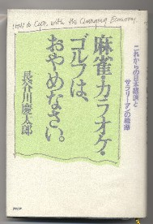

Book review 書壇。
（36）勘違い本じゃないけれど

ずいぶん以前に買った本だけど（改めて奥付きをみたら、1989年の出版だった）、別に麻雀本と勘違いして買ったわけではない。著者が経済評論家であることぐらい知っていたし、目次を一目見れば経済関係の本であることはすぐ分かる。単純に云って、タイトルに「麻雀」の一言があったので買っただけ。
それでもお固い経済書で、麻雀についてどのように触れられているか興味があった。しかし読んでみた結果は“案の定”だった。(^-^；
本文には“かって日本社会でもっとも普及した遊びのどれをとっても、たとえば麻雀は急速に衰退産業になってしまった。20才代の従業員は、まったくと言っていいほど麻雀をやらない(p88)”とか、“サラリーマンがやめるべき３つのことは、麻雀、カラオケ、ゴルフである(p130）”という文が出てくる程度であった。
要するに、「この厳しい時代、麻雀やゴルフにうつつを抜かしていてはダメですよ」という主旨でつけられたタイトル。しかしお固い内容とタイトルとのギャップが面白いので大事にしてる。